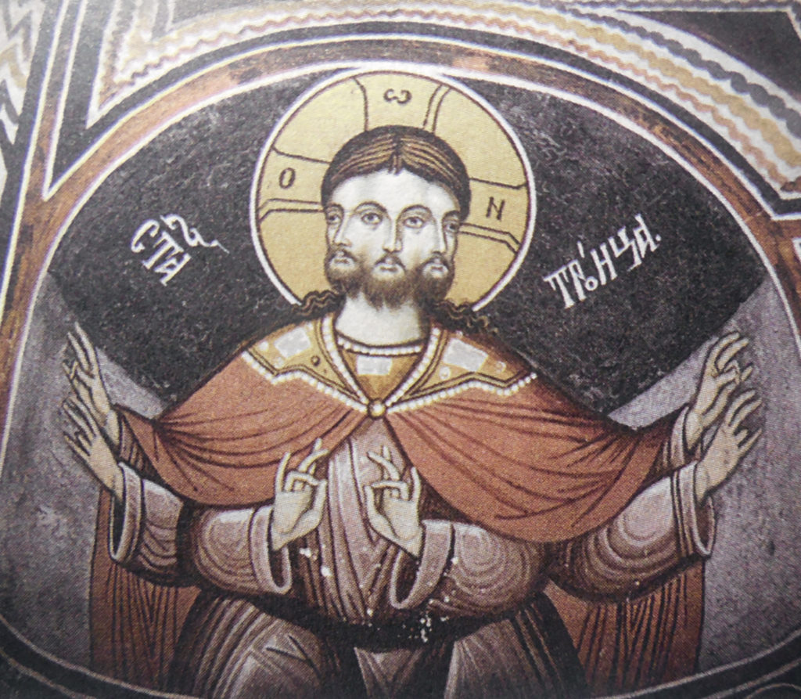

(Luke 2:14) Glory to God in the highest, and on earth peace, goodwill toward men
(Titus 3:2) to speak evil of no one, to be peaceable, gentle, showing all humility to all men.
I'm Ajitarok the diasporoid, the loyal friend to everyone. I do not know HTML, nor how to use sites like this. Please be kind to me... My straw.page is here... I want to be your friend, please find me on Twitter. I love people. To anyone who was ever nice to me, I am friend forever, and without regard to how they change or what they think of me. I do not change. I love people and I want to be a friend.
In vague terms, I am a left-wing nationalist. It is my humble opinion that
(Isaiah 9:6-7) For unto us a Child is born, Unto us a Son is given; And the government will be upon His shoulder. And His name will be called Wonderful, Counselor, Mighty God, Everlasting Father, Prince of Peace. Of the increase of His government and peace There will be no end, Upon the throne of David and over His kingdom, To order it and establish it with judgment and justice From that time forward, even forever. The zeal of the LORD of hosts will perform this.
I am an Orthodox Christian; I worship the one True God, the Triune God.

I believe in one God, Father Almighty, Creator of heaven and earth, and of all things visible and invisible. And in one Lord Jesus Christ, the only-begotten Son of God, begotten of the Father before all ages; Light from Light, true God from true God, begotten not created, of one essence with the Father through Whom all things were made. For us men and for our salvation He came down from heaven and was incarnate of the Holy Spirit and the Virgin Mary and became man. He was crucified for us under Pontius Pilate, and suffered and was buried; And He rose on the third day, according to the Scriptures. He ascended into heaven and is seated at the right hand of the Father; And He will come again with glory to judge the living and the dead. His kingdom shall have no end. And in the Holy Spirit, the Lord, the Creator of life, Who proceeds from the Father, Who together with the Father and the Son is worshipped and glorified, Who spoke through the prophets. In one, holy, catholic, and apostolic Church, I confess one baptism for the forgiveness of sins. I expect the resurrection of the dead, and the life of the age to come, amin.
:>
the smiler :)